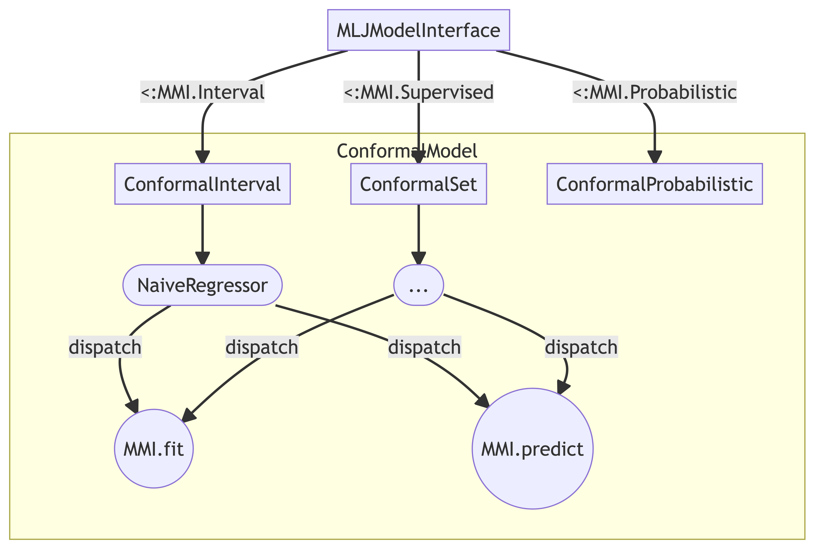

Contributor’s Guide
Contents
Contributing to ConformalPrediction.jl
Contributions are welcome! Please follow the SciML ColPrac guide.
Architecture
The diagram below demonstrates the package architecture at the time of writing. This is still subject to change, so any thoughts and comments are very much welcome.
The goal is to make this package as compatible as possible with MLJ to tab into existing functionality. The basic idea is to subtype MLJ Supervised models and then use concrete types to implement different approaches to conformal prediction. For each of these concrete types the compulsory MMI.fit and MMI.predict methods need be implemented (see here).

Abstract Suptypes
Currently I intend to work with three different abstract subtypes:
ConformalPrediction.ConformalInterval — TypeAn abstract base type for conformal models that produce interval-valued predictions. This includes most conformal regression models.
Missing docstring for ConformalSet. Check Documenter's build log for details.
ConformalPrediction.ConformalProbabilistic — TypeAn abstract base type for conformal models that produce probabilistic predictions. This includes some conformal classifier like Venn-ABERS.
fit and predict
The fit and predict methods are compulsory in order to prepare models for general use with MLJ. They also serve us to implement the logic underlying the various approaches to conformal prediction.
To understand how this currently works, let’s look at the AdaptiveInductiveClassifier as an example. Below are the two docstrings documenting both methods. Hovering over the bottom-right corner will reveal buttons that take you to the source code.
MLJModelInterface.fit — MethodMMI.fit(conf_model::AdaptiveInductiveClassifier, verbosity, X, y)For the AdaptiveInductiveClassifier nonconformity scores are computed by cumulatively summing the ranked scores of each label in descending order until reaching the true label $Y_i$:
$S_i^{\text{CAL}} = s(X_i,Y_i) = \sum_{j=1}^k \hat\mu(X_i)_{\pi_j} \ \text{where } \ Y_i=\pi_k, i \in \mathcal{D}_{\text{calibration}}$
MLJModelInterface.predict — MethodMMI.predict(conf_model::AdaptiveInductiveClassifier, fitresult, Xnew)For the AdaptiveInductiveClassifier prediction sets are computed as follows,
$\hat{C}_{n,\alpha}(X_{n+1}) = \left\{y: s(X_{n+1},y) \le \hat{q}_{n, \alpha}^{+} \{S_i^{\text{CAL}}\} \right\}, i \in \mathcal{D}_{\text{calibration}}$
where $\mathcal{D}_{\text{calibration}}$ denotes the designated calibration data.